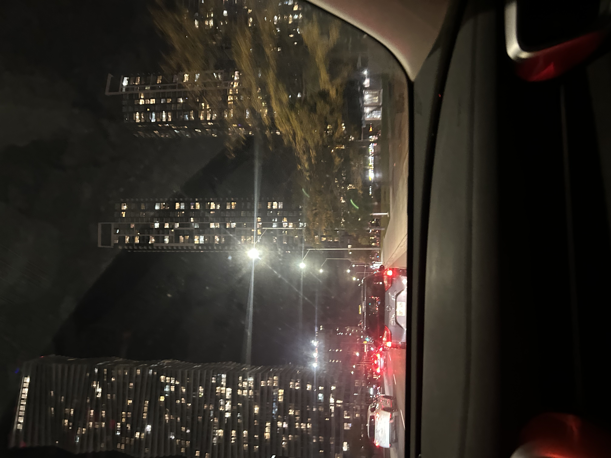

Every time a break comes around during the academic scool year, I take the time to breath and and get back in check with my mental health. Despite being filled with many positive people around me at school, it continues to be a struggle for me to find enough time for myself and my personal health. Though the school supplies many programs dedicated to students well beings, it becomes hard to give myself that mental check due to my busy schedule. With that being said, moments where I get to go home and enjoy things like night drives or small walks with my family are always calming. With the importance of mental health and peoples well being, I would always recommend students and faculty to take needed breaks to take care of their health with any means necessary.
